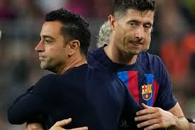
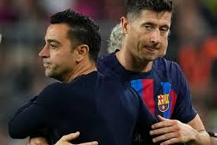

DERBY
El clásico español, conocido entre los medios de comunicación y los aficionados como «El Clásico», es el partido de fútbol que enfrenta al Real Madrid Club de Fútbol y al Fútbol Club Barcelona.Su relevancia ha crecido hasta convertirse en la rivalidad futbolística —y/o deportiva— más importante del ámbito español, situándose también como el encuentro entre clubes más seguido mundialmente del citado deporte, con aproximadamente 650 millones de espectadores de media entre 2012 y 2020 logrando colocarse entre los tres acontecimientos deportivos más seguidos del mundo junto con la final de la Copa Mundial de fútbol de Sudáfrica 2010 y de los Juegos Olímpicos de Pekín 2008 que llegaron a 700 y 600 millones de espectadores respectivamente.
También fue posicionado por la prestigiosa revista World Soccer en el primer puesto de los "World Soccer’s 50 Greatest Derbies" como el clásico de fútbol más importante del mundo.
Hasta 1999 los encuentros eran emitidos por televisión en abierto para todo el país sin atender al carácter del evento. Desde entonces, y hasta 2012, estos partidos fueron perdiendo paulatinamente tal privilegio debido a la aparición en escena del sistema de pago por visión y los nuevos derechos audiovisuales en España, por lo que pasaron a ser de emisión privada, en un primer paso, para más tarde potenciarse la emisión codificada. Desde el año 2012, solo se emiten en abierto por imperativo legal los partidos que dilucidan algún título o eliminatoria de gran consideración de interés público.
La rivalidad entre ambos equipos comenzó a adquirir gran relevancia a mediados del siglo xx cuando el club madrileño dio un gran salto cualitativo y comenzó a dominar un deporte hasta entonces en manos de los catalanes. Desde entonces ambos clubes han dominado el palmarés de las competiciones oficiales de España, siendo los dos rivales a batir, destacando en consecuencia el enfrentamiento entre ambos. Señalados como una bandera no solo deportiva sino institucional de sus respectivas regiones, compiten por dominar un deporte en el que el paso de los años han sido pocos los equipos que han conseguido disputarles tal supremacía. Entre ellos, los vascos del Athletic Club —considerado «el tercer grande» del panorama nacional por historia y palmarés— primer gran dominador del país ha visto como la diferencia de potencial con los dos clubes ha ido acrecenténdose. Pese a ello, en alguna ocasión han conseguido triunfos destacados, uniéndose al Valencia Club de Fútbol, al Club Atlético de Madrid y al Sevilla Fútbol Club como los equipos a disputarles los títulos a barcelonistas y madridistas.
 
